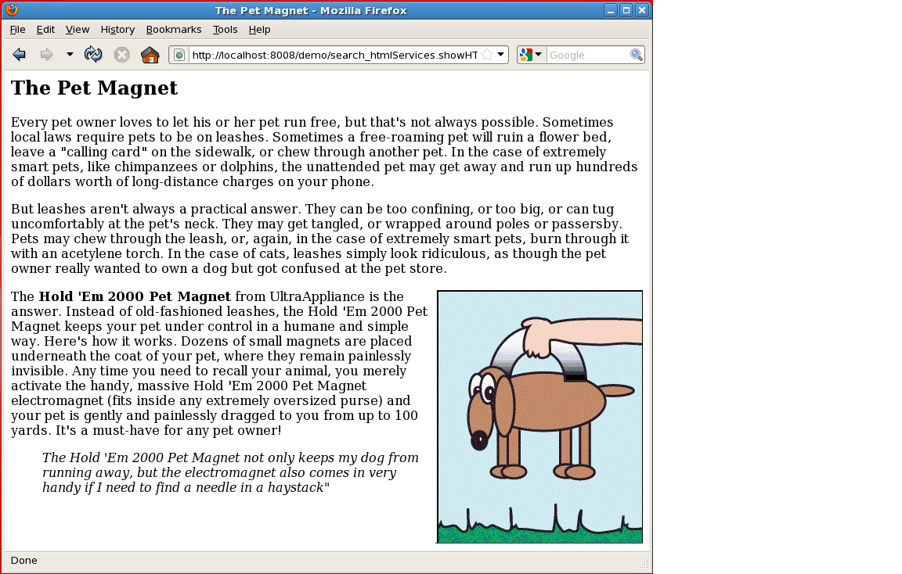
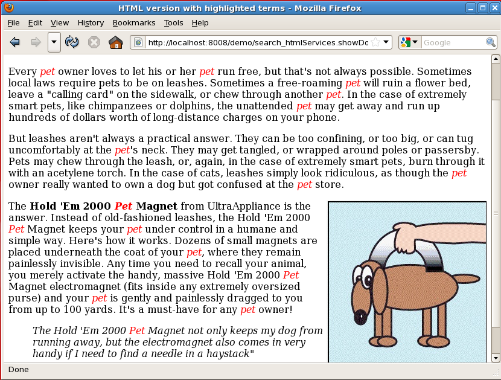
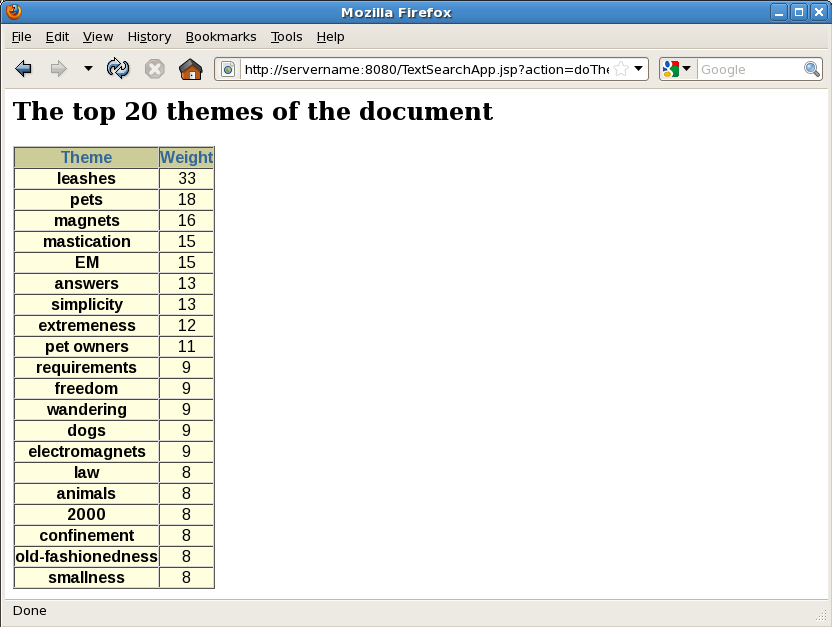
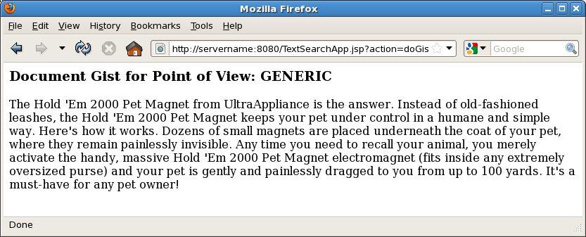

5 Presenting Documents in Oracle Text
Oracle Text provides various methods for presenting documents in results for query applications. This chapter describes document presentation.
This chapter contains the following topics:
5.1 Highlighting Query Terms
In Oracle Text query applications, you can present selected documents with query terms highlighted for text queries or with themes highlighted for ABOUT queries.
You can generate three types of output associated with highlighting:
-
A marked-up version of the document
-
Query offset information for the document
-
A concordance of the document, in which occurrences of the query term are returned with their surrounding text
This section contains the following topics:
5.1.1 Text highlighting
For text highlighting, you supply the query, and Oracle Text highlights words in the document that satisfy the query. You can obtain plain-text or HTML highlighting.
5.1.2 Theme Highlighting
For ABOUT queries, the CTX_DOC procedures highlight and mark up words or phrases that best represent the ABOUT query.
5.1.3 CTX_DOC Highlighting Procedures
These are the highlighting procedures in CTX_DOC:
-
CTX_DOC.MARKUPandCTX_DOC.POLICY_MARKUP -
CTX_DOC.HIGHLIGHTandCTX_DOC.POLICY_HIGHLIGHT -
CTX_DOC.SNIPPETandCTX_DOC.POLICY_SNIPPET
The POLICY and non-POLICY versions of the procedures are equivalent, except that the POLICY versions do not require an index.
Note:
SNIPPET can also be generated using the Result Set Interface.
See Also:
Oracle Text Reference for information on CTX_QUERY.RESULT_SET
This section contains these topics:
5.1.3.1 Markup Procedure
The CTX_DOC.MARKUP and CTX_DOC.POLICY_MARKUP procedures take a document reference and a query, and return a marked-up version of the document. The output can be either marked-up plaintext or marked-up HTML. For example, you might specify that a marked-up document be returned with the query term surrounded by angle brackets (<<<tansu>>>) or HTML (<b>tansu</b>).
CTX_DOC.MARKUP and CTX_DOC.POLICY_MARKUP are equivalent, except that CTX_DOC.POLICY_MARKUP does not require an index.
You can customize the markup sequence for HTML navigation.
CTX_DOC.MARKUP Example
The following example is taken from the Web application described in CONTEXT Query Application. The procedure showDoc takes an HTML document and a query, creates the highlight markup—in this case, the query term will display in red—and outputs the result to an in-memory buffer. It then uses htp.print to display it in the browser.
procedure showDoc (p_id in varchar2, p_query in varchar2) is
v_clob_selected CLOB;
v_read_amount integer;
v_read_offset integer;
v_buffer varchar2(32767);
v_query varchar(2000);
v_cursor integer;
begin
htp.p('<html><title>HTML version with highlighted terms</title>');
htp.p('<body bgcolor="#ffffff">');
htp.p('<b>HTML version with highlighted terms</b>');
begin
ctx_doc.markup (index_name => 'idx_search_table',
textkey => p_id,
text_query => p_query,
restab => v_clob_selected,
starttag => '<i><font color=red>',
endtag => '</font></i>');
v_read_amount := 32767;
v_read_offset := 1;
begin
loop
dbms_lob.read(v_clob_selected,v_read_amount,v_read_offset,v_buffer);
htp.print(v_buffer);
v_read_offset := v_read_offset + v_read_amount;
v_read_amount := 32767;
end loop;
exception
when no_data_found then
null;
end;
exception
when others then
null; --showHTMLdoc(p_id);
end;
end showDoc;
end;
/
show errors
set define onSee Also:
Oracle Text Reference for more information about CTX_DOC.MARKUP and CTX_DOC.POLICY_SNIPPET
5.1.3.2 Highlight Procedure
CTX_DOC.HIGHLIGHT and CTX_DOC.POLICY_HIGHLIGHT take a query and a document and return offset information for the query in either plaintext or HTML formats. This offset information can be used to write your own custom routines for displaying documents.
CTX_DOC.HIGHLIGHT and CTX_DOC.POLICY_HIGHLIGHT are equivalent, except that CTX_DOC.POLICY_HIGHLIGHT does not require an index.
With offset information, you can display a highlighted version of document as desired. For example, you can display the document with different font types or colors rather than using the standard plain text markup obtained from CTX_DOC.MARKUP.
See Also:
Oracle Text Reference for more information about using CTX_DOC.HIGHLIGHT and CTX_DOC.POLICY_HIGHLIGHT
5.1.3.3 Concordance
CTX_DOC.SNIPPET and CTX_DOC.POLICY_SNIPPET produce a concordance of the document, in which occurrences of the query term are returned with their surrounding text. This result is sometimes known as Key Word in Context, or KWIC, because instead of returning the entire document (with or without the query term highlighted), it returns the query term in text fragments, allowing a user to see it in context. You can control the way the query term is highlighted in the returned fragments.
CTX_DOC.SNIPPET and CTX_DOC.POLICY_SNIPPET are equivalent, except that CTX_DOC.POLICY_SNIPPET does not require an index. CTX_DOC.POLICY_SNIPPET and CTX_DOC.SNIPPET include two new attributes: radius and max_length. The radius attribute specifies the approximate desired length of each segment. Whereas, max_length puts an upper bound on the length of the sum of all segments.
See Also:
Oracle Text Reference for more information about CTX_DOC.SNIPPET and CTX_DOC.POLICY_SNIPPET
5.2 Obtaining Part-of-Speech Information for a Document
The CTX_DOC package contains procedures to create policies for obtaining part-of-speech information for a given document. This is described under POLICY_NOUN_PHRASES in Oracle Text Reference and POLICY_PART_OF_SPEECH in Oracle Text Reference.
5.3 Obtaining Lists of Themes, Gists, and Theme Summaries
The following table describes lists of themes, gists, and theme summaries.
Table 5-1 Lists of Themes, Gists, and Theme Summaries
| Output Type | Description |
|---|---|
|
A list of the main concepts of a document. You can generate list of themes where each theme is a single word or phrase or where each theme is a hierarchical list of parent themes. |
|
|
Text in a document that best represents what the document is about as a whole. |
|
|
Text in a document that best represents a given theme in the document. |
To obtain this output, you use procedures in the CTX_DOC supplied package. With this package, you can do the following:
-
Identify documents by
ROWIDin addition to primary key -
Store results in-memory for improved performance
5.3.1 Lists of Themes
A list of themes is a list of the main concepts in a document. Use the CTX_DOC.THEMES procedure to generate lists of themes.
See Also:
Oracle Text Reference to learn more about the command syntax for CTX_DOC.THEMES
The following In-Memory Theme example generates the top 10 themes for document 1 and stores them in an in-memory table called the_themes. The example then loops through the table to display the document themes.
declare
the_themes ctx_doc.theme_tab;
begin
ctx_doc.themes('myindex','1',the_themes, numthemes=>10);
for i in 1..the_themes.count loop
dbms_output.put_line(the_themes(i).theme||':'||the_themes(i).weight);
end loop;
end;
The following example create a Result Table Theme.
create table ctx_themes (query_id number,
theme varchar2(2000),
weight number);
To obtain a list of themes where each element in the list is a single theme, enter the following:
begin
ctx_doc.themes('newsindex','34','CTX_THEMES',1,full_themes => FALSE);
end;
To obtain a list of themes where each element in the list is a hierarchical list of parent themes, enter the following:
begin
ctx_doc.themes('newsindex','34','CTX_THEMES',1,full_themes => TRUE);
end;5.3.2 Gist and Theme Summary
A gist is the text of a document that best represents what the document is about as a whole. A theme summary is the text of a document that best represents a single theme in the document.
Use the procedure CTX_DOC.GIST to generate gists and theme summaries. You can specify the size of the gist or theme summary when you call the procedure.
See Also:
Oracle Text Reference to learn about the command syntax for CTX_DOC.GIST
5.3.2.1 In-Memory Gist
The following example generates a nondefault size generic gist of at most 10 paragraphs. The result is stored in memory in a CLOB locator. The code then de-allocates the returned CLOB locator after using it.
declare
gklob clob;
amt number := 40;
line varchar2(80);
begin
ctx_doc.gist('newsindex','34','gklob',1,glevel => 'P',pov => 'GENERIC', numParagraphs => 10);
-- gklob is NULL when passed-in, so ctx-doc.gist will allocate a temporary
-- CLOB for us and place the results there.
dbms_lob.read(gklob, amt, 1, line);
dbms_output.put_line('FIRST 40 CHARS ARE:'||line);
-- have to de-allocate the temp lob
dbms_lob.freetemporary(gklob);
end;5.3.2.2 Result Table Gists
To create a gist table:
create table ctx_gist (query_id number,
pov varchar2(80),
gist CLOB);
The following example returns a default sized paragraph level gist for document 34:
begin
ctx_doc.gist('newsindex','34','CTX_GIST',1,'PARAGRAPH', pov =>'GENERIC');
end;
The following example generates a nondefault size gist of ten paragraphs:
begin
ctx_doc.gist('newsindex','34','CTX_GIST',1,'PARAGRAPH', pov =>'GENERIC', numParagraphs => 10);
end;
The following example generates a gist whose number of paragraphs is ten percent of the total paragraphs in document:
begin
ctx_doc.gist('newsindex','34','CTX_GIST',1, 'PARAGRAPH', pov =>'GENERIC', maxPercent => 10);
end;5.4 Document Presentation and Highlighting
Typically, a query application enables the user to view the documents returned by a query. The user selects a document from the hit list and then the application presents the document in some form.
With Oracle Text, you can display a document in different ways. For example, you can present documents with query terms highlighted. Highlighted query terms can be either the words of a word query or the themes of an ABOUT query in English.
You can also obtain gist (document summary) and theme information from documents with the CTX_DOC PL/SQL package.
Table 5-2 describes the different output you can obtain and which procedure to use to obtain each type.
Table 5-2 CTX_DOC Output
| Output | Procedure |
|---|---|
|
Plain text version, no highlights |
|
|
HTML version of document, no highlights |
|
|
Highlighted document, plain text version |
|
|
Highlighted document, HTML version |
|
|
Highlight offset information for plain text version |
|
|
Highlight offset information for HTML version |
|
|
Theme summaries and gist of document. |
|
|
List of themes in document. |
|
See Also:
Figure 5-1 shows an original document to which we can apply highlighting, gisting, and theme extraction in the following sections.
Figure 5-1 Sample Document for Highlighting, Gisting, and Theme Extraction
Description of "Figure 5-1 Sample Document for Highlighting, Gisting, and Theme Extraction"
5.4.1 Highlighting Example
Figure 5-2 is a screen shot of a query application presenting the document shown in Figure 5-1 with the query term pet highlighted. This output was created using the text query application described in CONTEXT Query Application.
Figure 5-2 Pet Highlighted in Pet Magnet Document
Description of "Figure 5-2 Pet Highlighted in Pet Magnet Document"
5.4.2 Document List of Themes Example
Figure 5-3 is a screen shot of a query application presenting a list of themes for the document shown in Figure 5-1. This output was created using the text query application described in CONTEXT Query Application.
Figure 5-3 Query Application Displaying Document Themes
Description of "Figure 5-3 Query Application Displaying Document Themes"
5.4.3 Gist Example
Figure 5-4 is a screen shot of a query application presenting a gist of the document shown in Figure 5-1. This output was created using the text query application produced described in CONTEXT Query Application.
Figure 5-4 Query Application Presenting Document Gist
Description of "Figure 5-4 Query Application Presenting Document Gist"